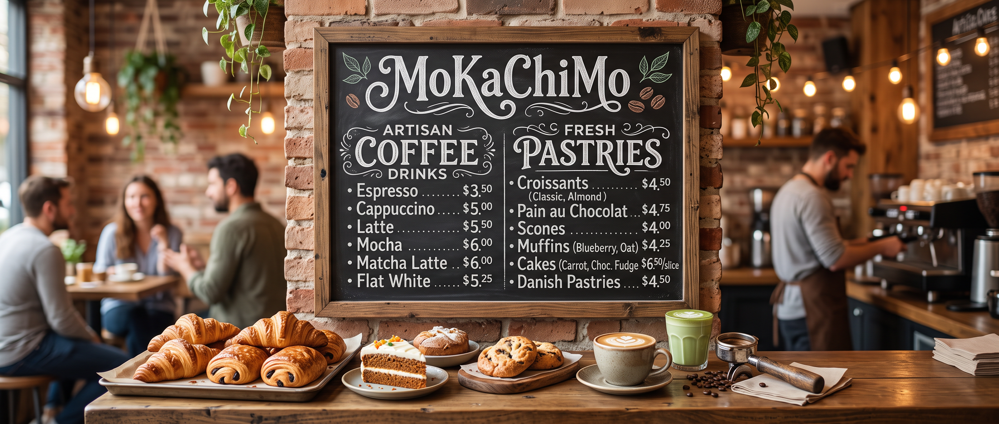

Café de especialidad · Arequipa
Una pausa con sabor a origen.
MoKaChiMo reúne café de especialidad, granos seleccionados y pastelería artesanal en una experiencia cálida inspirada en la identidad visual de los ejercicios 1 y 3.
Café de especialidad · Arequipa
MoKaChiMo reúne café de especialidad, granos seleccionados y pastelería artesanal en una experiencia cálida inspirada en la identidad visual de los ejercicios 1 y 3.

El diseño recrea la atmósfera de las imágenes proporcionadas con una paleta de café, crema y verde, tarjetas limpias, profundidad suave y componentes interactivos.
Selecciones de Perú, Colombia, Etiopía y Brasil con perfiles diferenciados de taza.
Lotes pequeños para conservar aroma, dulzor y trazabilidad desde el origen.
Croissants, rolls, brownies y tartaletas pensados para acompañar cada método.
